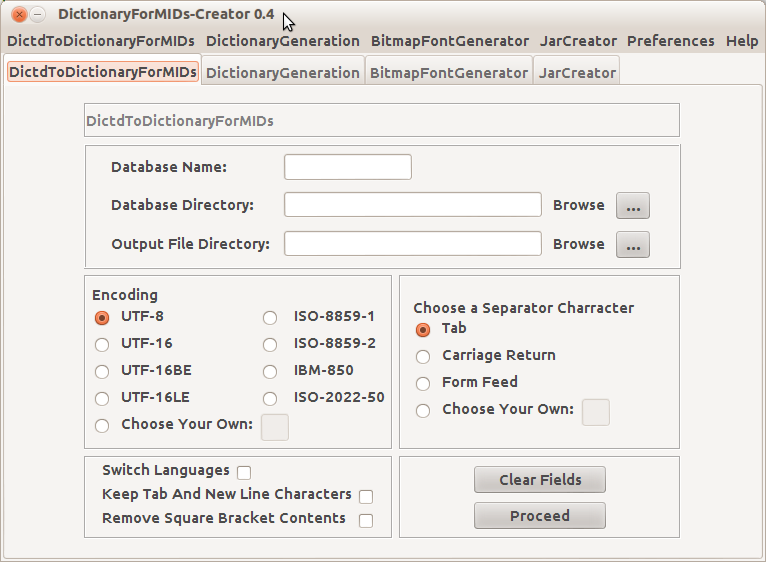

DictionaryForMIDs-Creator (DfM-Creator)
(GTK+ Look And Feel)

Welcome to the DictionaryForMIDs-Creator Documentation.
Below you will find information related to the following tools:
-DictdToDictionaryForMIDs
-DictionaryGeneration
-BitmapFontGenerator
-JarCreator
PS:
Please bear in mind that this is actually the documentation of the
CLI versions of the above mentioned tools. The real documentation for
the GUI version (DictionaryForMIDs-Creator) is not yet written
(it will be written in a future version).